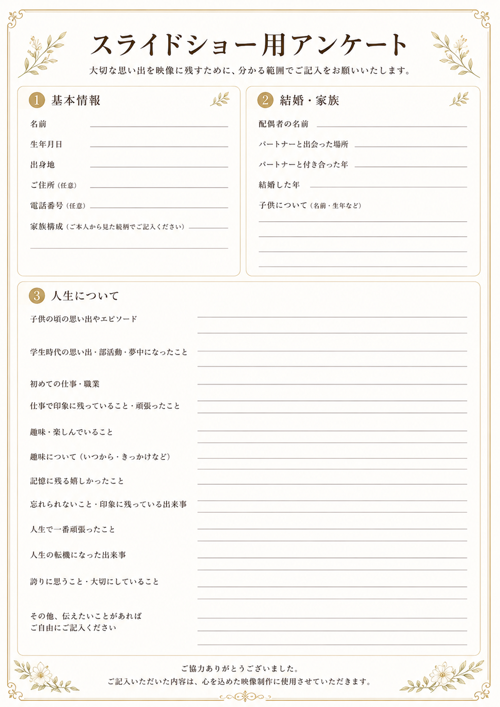

スライドショー用アンケート
このアンケートは、より心のこもったスライドショーを制作するために、ご依頼いただいた方にご記入をお願いしているものです。大切な思い出を映像に残すために、分かる範囲でご協力いただけると幸いです。
📋 ご記入にあたって
すべての項目を埋める必要はありません。分かる範囲・書けるところだけで大丈夫です。記入いただいた内容は、心を込めた映像制作にのみ使用いたします。
印刷して手書きで記入したい方は、下のボタンからPDFをダウンロードしてください。書きにくい場合は、内容を口頭でお話しいただくか、メモ書きでも構いません。
📷 ご用意いただく写真について
スライドショーに使用したいお写真を20〜40枚ほどご用意ください。
- 幼少期・学生時代・仕事・結婚・子育て・趣味など、人生の各場面の写真があると理想的です
- データ（JPG・PNG）でも、プリント写真のスキャンでも対応できます
- 古い写真や画質が粗い写真でも問題ありません。大切な一枚をお持ちください
- 写真の枚数は多くても少なくても、まずはご相談ください
{kind=link}
アンケートの内容
アンケートは以下の3つのパートで構成されています。書きにくい項目は空欄のままで構いません。
① 基本情報
お名前・生年月日・出身地・ご住所（任意）・電話番号（任意）・ご家族構成をお書きください。
② 結婚・家族
配偶者のお名前・出会った場所・交際を始めた年・結婚した年・お子様についてなどをお書きください。
③ 人生について
スライドショーの中心になる部分です。以下の内容について、思い出せる範囲でご記入ください。
- 子供の頃の思い出やエピソード
- 学生時代の思い出・部活動・夢中になったこと
- 初めての仕事・職業
- 仕事で印象に残っていること・頑張ったこと
- 趣味・楽しんでいること（いつから・きっかけなど）
- 記憶に残る嬉しかったこと
- 忘れられないこと・印象に残っている出来事
- 人生で一番頑張ったこと
- 人生の転機になった出来事
- 誇りに思うこと・大切にしていること
- その他、伝えたいことがあれば自由にご記入ください

よくある質問
写真が20枚に満たない場合はどうすればいいですか？
少ない枚数でも制作は可能です。まずはお手持ちの写真をすべてお持ちいただき、ご相談ください。スライドショーの長さや構成を調整して対応します。
アンケートの返送方法は？
記入済みのアンケートは、直接お持ちいただくかメールでの送付、写真のスキャンでも受け付けています。口頭でお話しいただくだけでも大丈夫です。
デジタルデータ（スマホの写真）はそのまま使えますか？
はい、スマホやデジカメのデータをそのまま使用できます。LINEやメールでの送付も受け付けています。
プリント写真しか手元にない場合は？
スキャンしてデータ化することができます。大切な写真をお持ちください。